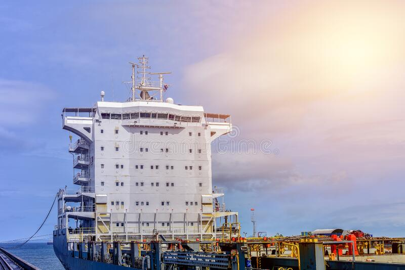

The accommodation area is the house for crews and lives. It has all the amenities, including offices, gym, crew cabins, hospital, salon, recreation room, common rooms, laundry, and galley.
It is a key part of the ship and consists of the garbage disposal system, freshwater system, sewage treatment plant, refrigeration system (domestic) and air conditioning for the accommodation block.
It is a necessary part of a ship and facilitates space for relaxing, medical facility and food courts.
